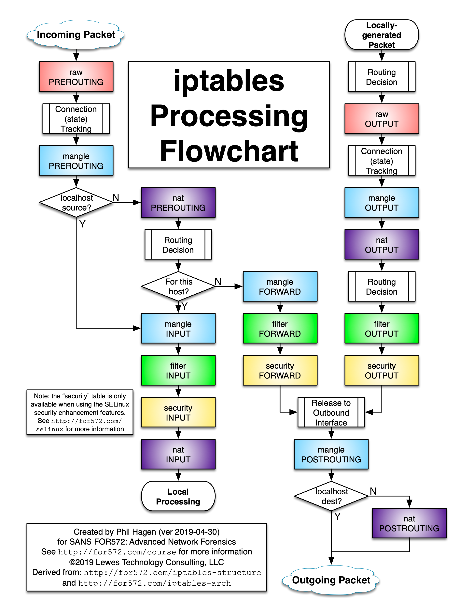

concept
iptables 是基于 linux 内核 netfilter hook 实现的用户态工具，处于网络层和传输层之间，可以对 packet 做过滤和 nat。
iptables 通过表来组织规则，相同功能的规则放在同一个表中。
- filter：负责包的过滤
- nat：网络地址转换
- mangle：修改报文
- raw：关闭 nat 表上启动的连接追踪
- security: 用于 强制访问控制 网络规则
iptables 的执行顺序则是按照 chain 来决定，chain 可以放各种表，执行顺序如下图

- 经过本机的包：prerouting ->input
- 从本机转发出去的包：prerouting->forward->postrouting
- 从本机出去的包：output->postrouting
表的执行顺序 raw > mangle > filter > security > nat
另外不同的 chain 中的表也不同，比如想做 filter 只能在 input、forward、output 中做，想做 nat 只能在不是 forward 的 chain 中做。
kube-proxy 中的 iptables
kube-proxy 的作用是解决集群内部的四层负载均衡，目前支持 userspace 和 内核态的 iptables 和 ipvs，通过 list-watch service 和 endpoint 来同步 iptables 的规则。service 中的 ClusterIP 是 apiserver 分配的，代码位置在 pkg/registry/core/service，iptables 相关的代码在 pkg/proxy/iptables目录，kube-proxy 主要使用了 nat 和 filster 表。
创建一个 nginx 服务
1
2
|
kubectl run nginx --image=nginx --replicas=2
kubectl expose deployment nginx --port=8080 --target-port=80 --type NodePort
|
iptables-save 查看所有的规则(无关规则已被删除)
iptables 命令只能通过表 (-t，默认是 filter 表) 去查询链，都很不直观看起来，通过 iptables-save 查看反而清楚一些，但是规则多了可读性就有点差了。
1
2
3
4
5
6
7
8
9
10
11
12
13
14
15
16
17
18
19
20
21
22
23
24
25
26
27
28
|
*nat
-A PREROUTING -m comment --comment "kubernetes service portals" -j KUBE-SERVICES
-A OUTPUT -m comment --comment "kubernetes service portals" -j KUBE-SERVICES
-A POSTROUTING -m comment --comment "kubernetes postrouting rules" -j KUBE-POSTROUTING
-A KUBE-MARK-DROP -j MARK --set-xmark 0x8000/0x8000
-A KUBE-MARK-MASQ -j MARK --set-xmark 0x4000/0x4000
-A KUBE-NODEPORTS -p tcp -m comment --comment "default/nginx:" -m tcp --dport 30180 -j KUBE-MARK-MASQ
-A KUBE-NODEPORTS -p tcp -m comment --comment "default/nginx:" -m tcp --dport 30180 -j KUBE-SVC-4N57TFCL4MD7ZTDA
-A KUBE-POSTROUTING -m comment --comment "kubernetes service traffic requiring SNAT" -m mark --mark 0x4000/0x4000 -j MASQUERADE
-A KUBE-SEP-43IWXJI557JKCKCF -s 172.17.0.5/32 -j KUBE-MARK-MASQ
-A KUBE-SEP-43IWXJI557JKCKCF -p tcp -m tcp -j DNAT --to-destination 172.17.0.5:80
-A KUBE-SEP-UZXILYFQQ2IZUWN5 -s 172.17.0.4/32 -j KUBE-MARK-MASQ
-A KUBE-SEP-UZXILYFQQ2IZUWN5 -p tcp -m tcp -j DNAT --to-destination 172.17.0.4:80
-A KUBE-SERVICES -d 10.105.178.199/32 -p tcp -m comment --comment "default/nginx: cluster IP" -m tcp --dport 8080 -j KUBE-SVC-4N57TFCL4MD7ZTDA
-A KUBE-SERVICES -m comment --comment "kubernetes service nodeports; NOTE: this must be the last rule in this chain" -m addrtype --dst-type LOCAL -j KUBE-NODEPORTS
-A KUBE-SVC-4N57TFCL4MD7ZTDA -m statistic --mode random --probability 0.50000000000 -j KUBE-SEP-UZXILYFQQ2IZUWN5
-A KUBE-SVC-4N57TFCL4MD7ZTDA -j KUBE-SEP-43IWXJI557JKCKCF
*filter
-A INPUT -m conntrack --ctstate NEW -m comment --comment "kubernetes service portals" -j KUBE-SERVICES
-A INPUT -m conntrack --ctstate NEW -m comment --comment "kubernetes externally-visible service portals" -j KUBE-EXTERNAL-SERVICES
-A INPUT -j KUBE-FIREWALL
-A FORWARD -m comment --comment "kubernetes forwarding rules" -j KUBE-FORWARD
-A FORWARD -m conntrack --ctstate NEW -m comment --comment "kubernetes service portals" -j KUBE-SERVICES
-A OUTPUT -m conntrack --ctstate NEW -m comment --comment "kubernetes service portals" -j KUBE-SERVICES
-A OUTPUT -j KUBE-FIREWALL
-A KUBE-FIREWALL -m comment --comment "kubernetes firewall for dropping marked packets" -m mark --mark 0x8000/0x8000 -j DROP
-A KUBE-FORWARD -m comment --comment "kubernetes forwarding rules" -m mark --mark 0x4000/0x4000 -j ACCEPT
COMMIT
|
访问 ClusterIP
1
2
3
4
5
6
7
8
9
10
11
12
13
14
15
16
17
|
-A PREROUTING -m comment --comment "kubernetes service portals" -j KUBE-SERVICES
# 匹配 ClusterIP 跳到 KUBE-SVC-4N57TFCL4MD7ZTDA 链
-A KUBE-SERVICES -d 10.105.178.199/32 -p tcp -m comment --comment "default/nginx: cluster IP" -m tcp --dport 8080 -j KUBE-SVC-4N57TFCL4MD7ZTDA
# 根据 pod 的数量按概率往 endpoint 跳
-A KUBE-SVC-4N57TFCL4MD7ZTDA -m statistic --mode random --probability 0.50000000000 -j KUBE-SEP-UZXILYFQQ2IZUWN5
# 跳到 endpoint，做 DNAT
-A KUBE-SVC-4N57TFCL4MD7ZTDA -j KUBE-SEP-43IWXJI557JKCKCF
-A KUBE-SEP-43IWXJI557JKCKCF -s 172.17.0.5/32 -j KUBE-MARK-MASQ
-A KUBE-SEP-43IWXJI557JKCKCF -p tcp -m tcp -j DNAT --to-destination 172.17.0.5:80
-A KUBE-SEP-UZXILYFQQ2IZUWN5 -s 172.17.0.4/32 -j KUBE-MARK-MASQ
-A KUBE-SEP-UZXILYFQQ2IZUWN5 -p tcp -m tcp -j DNAT --to-destination 172.17.0.4:80
# 为包打标记
-A KUBE-MARK-MASQ -j MARK --set-xmark 0x4000/0x4000
-A FORWARD -m comment --comment "kubernetes forwarding rules" -j KUBE-FORWARD
# 接受打上标记的包
-A KUBE-FORWARD -m comment --comment "kubernetes forwarding rules" -m mark --mark 0x4000/0x4000 -j ACCEPT
-A KUBE-POSTROUTING -m comment --comment "kubernetes service traffic requiring SNAT" -m mark --mark 0x4000/0x4000 -j MASQUERADE
|
访问 NodePort
1
2
3
4
5
6
7
8
9
10
11
12
13
14
15
|
-A PREROUTING -m comment --comment "kubernetes service portals" -j KUBE-SERVICES
# --dst-type 接受目标地址为本机的包
-A KUBE-SERVICES -m comment --comment "kubernetes service nodeports; NOTE: this must be the last rule in this chain" -m addrtype --dst-type LOCAL -j KUBE-NODEPORTS
-A KUBE-NODEPORTS -p tcp -m comment --comment "default/nginx:" -m tcp --dport 30180 -j KUBE-MARK-MASQ
-A KUBE-MARK-MASQ -j MARK --set-xmark 0x4000/0x4000
-A KUBE-NODEPORTS -p tcp -m comment --comment "default/nginx:" -m tcp --dport 30180 -j KUBE-SVC-4N57TFCL4MD7ZTDA
-A KUBE-SVC-4N57TFCL4MD7ZTDA -m statistic --mode random --probability 0.50000000000 -j KUBE-SEP-UZXILYFQQ2IZUWN5
# 跳到 endpoint，做 DNAT
-A KUBE-SVC-4N57TFCL4MD7ZTDA -j KUBE-SEP-43IWXJI557JKCKCF
-A KUBE-SEP-43IWXJI557JKCKCF -s 172.17.0.5/32 -j KUBE-MARK-MASQ
-A KUBE-SEP-43IWXJI557JKCKCF -p tcp -m tcp -j DNAT --to-destination 172.17.0.5:80
-A KUBE-SEP-UZXILYFQQ2IZUWN5 -s 172.17.0.4/32 -j KUBE-MARK-MASQ
-A KUBE-SEP-UZXILYFQQ2IZUWN5 -p tcp -m tcp -j DNAT --to-destination 172.17.0.4:80
-A KUBE-MARK-MASQ -j MARK --set-xmark 0x4000/0x4000
-A KUBE-POSTROUTING -m comment --comment "kubernetes service traffic requiring SNAT" -m mark --mark 0x4000/0x4000 -j MASQUERADE
|